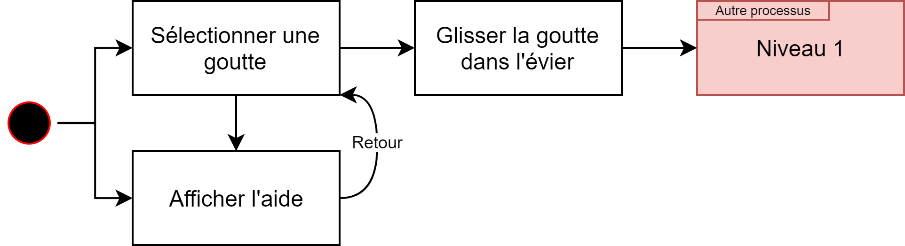
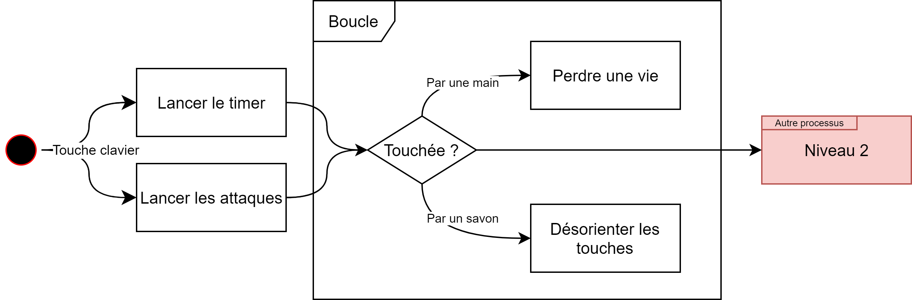
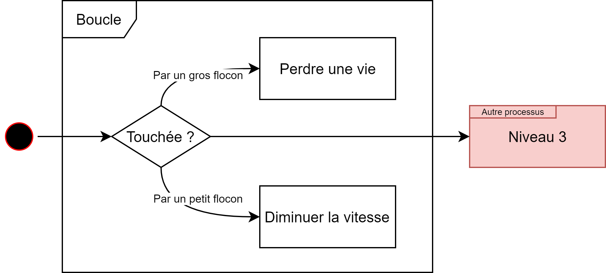
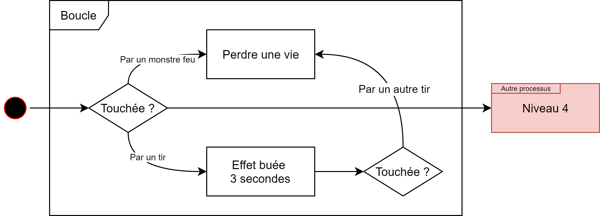
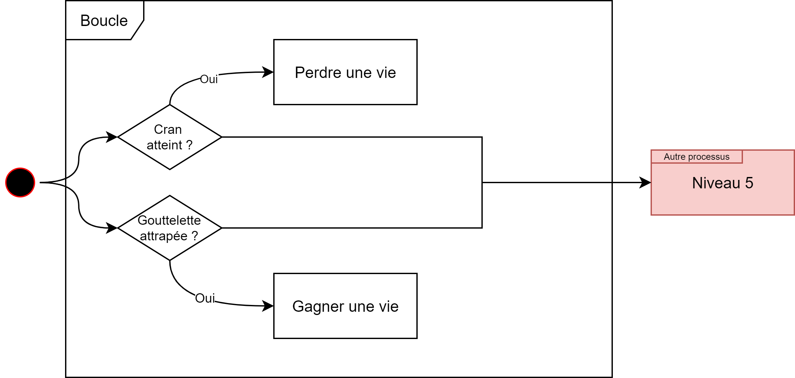
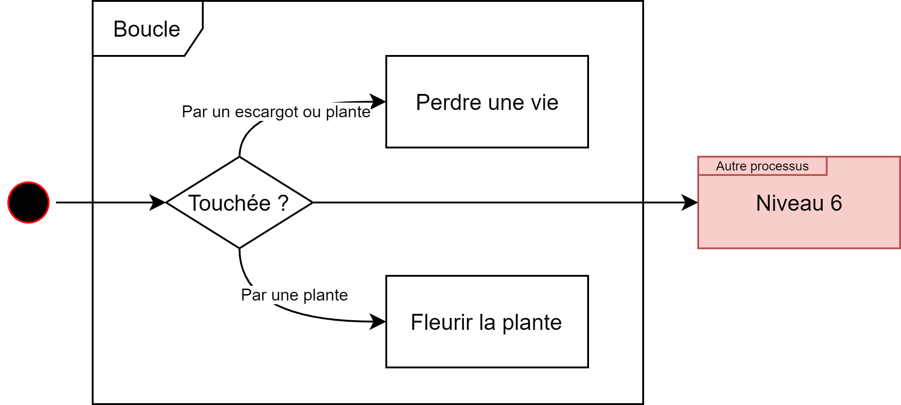
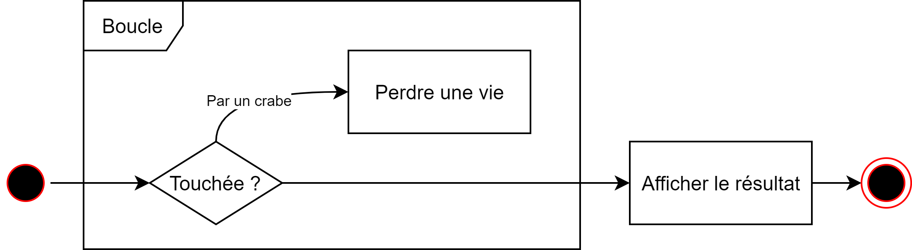

Flux et sitemap de votre projet
Par Stéphanie Baechler le 06/04/2021 à 16:10
Sitemap
{kind=link}
Processus

- Chaque écran indique
- Le timer
- Le nombre de vies restantes
- Le nom du niveau
Départ du jeu :

- Décor : évier
- Obstacles :
- Main qui essaie avec papier essuie-tout
de sécher la goutte (déplacement) - Savon fixe qui induit un effet si touché
- Impact :
- Main touchée : perd une vie
- Savon touché : désoriente les touches
Niveau 1 : Clean the drop

- Décor : tuyauterie
- Obstacle : neige qui tombe (petits et gros flocons)
- Impact :
- Petit flocon touché : ralentit la goutte
- Gros flocon touché : perd une vie
Niveau 2 : Cool the drop

- Décor : tuyauterie
- Obstacle : feux qui tirent sur la goutte
- Impact :
- Boule de feu touchée : effet buée (plus de vision pendant 3 secondes) ; si touché une deuxième fois : perd une vie
- Monstre feu touché : perd une vie
Niveau 3 : Burn the drop

- Décor : labyrinthe radiateur
- Obstacle : la température augmente progressivement
- Impact :
- Chaque cran du thermomètre atteint : une vie perdue
- Défense :
- Des vies peuvent être récupérées dans le labyrinthe
Niveau 4 : Heat up the drop

- Décor : sort du robinet pour entrer dans le jardin
- Obstacle :
- Escargots ayant soif qui se déplace dans le niveau
- Plante verte ayant soif qui apparaissent aléatoirement
- Impact :
- Escargot touché : une vie perdue
- Plante verte touchée : la plante fleurit et une vie perdue
Niveau 5 : Slurp the drop

- Décor : sort du jardin et arrive sur la plage
- Obstacle : crabe agitant ses pinces qui tente d'attraper la goutte
- Impact :
- Crabe touché : perd une vie
Niveau 6 : Pinch the drop